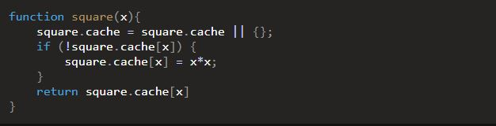
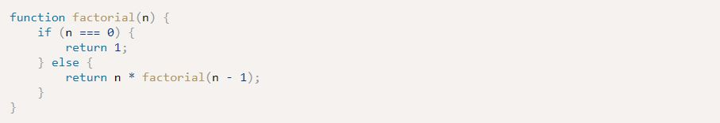

Week 7 Notes & Exercises
Chapter 11: Further Functions
- Functions are first class objects; they can have properties and methods themselves
- For example, functions have a "length" property that returns the number of parameters they have
- The call method can be used to set the value of "this" inside a function to an object that is provided as the first argument
- function sayHello() { return `My name is ${ this.name }`; const clark = { name: 'Clark' }; sayHello.call(clark)
- You can create your own properties; for ex, you can add a description property that describes what the function does
- A useful feature is memoization, which is when you can cache results that take a while to compute into an object so that if the same argument is passed through again, the result will be ready
- 
- You can define IFFE's by placing parentheses at the end of the function definition and placing the entire expression in parentheses
- (function doThis() { define function })();
- You can create temporary variables within these functions because they will disappear once the functions are executed
- Functions can be redefined as you can make them rewrite themselves
- function party() {
console.log('This is the first statement');
party = function() {
console.log('Second statement'); }
}- When run for the first time, it will log the first statement, but it will log the second statement every time afterwards
- Be careful when using this because you will lose properties of the functions once it redefines itself
- function party() {
- Recursive functions are useful for when iterative processes are involved
- A common example is a function that calculates the factorial of a number
- 
- Promises don't do anything that can't already be achieved by using callbacks
- But they help simplify the process and avoid the convoluted code that result from using multiple callbacks
- When a promise is created, it calls an asynchronous operation and is then pending
- While the operation is taking place, the promise is unsettled
- When the operation is completed, the promise is settled
- There are two different outcomes for when a promise is settled
- Resolved - the operation was completed successfully
- Rejected - the operation didn't work as expected, wasn't completed successfully, or resulted in an error
- Both outcomes return relevant data, and you can take action based on the outcome of the promise
- Creating closures is like creating an 'inner' function, one that is declared inside another function
- In doing this, the inner function has full access to the variables declared inside the scope of the outside function
- They are formed when a function returns another function that maintains access to the variables in the outer function
- Calling generator functions doesn't run any of the code in the function, but it returns a Generator object
- The Generator object can be used to create an iterator that implements a next() method that returns a value every time the next() method is called
- Define a generator function by putting an asterisk right after the function declaration
- function* exampleGenerator(){//code}
- Yield is used instead of return because yield will store the value for later use
- enables data to be sent and received in the bg, as well as portions of a page to be updated in response to user events, while the rest of the program continues to run
- Request objects are created using the Request() constructor, and include the following properties
- enables data to be sent and received in the bg, as well as portions of a page to be updated in response to user events, while the rest of the program continues to run
- url - The URL of the requested resource (the only property that is required)
- method - a string that specifies which HTTP method should be used for the request ('GET' by default)
- headers - a Headers object that provides details of the request's headers
- mode - allows you to specify if CORS is used or not (CORS is enabled by default)
- cache - allows you to specify how the request will use the browser's cache
- credentials - lets you specify if cookies should be allowed with the request
- redirect - specifies what to do if the response returns a redirect
- enables data to be sent and received in the bg, as well as portions of a page to be updated in response to user events, while the rest of the program continues to run
Ajax
Ajax is a technique that allows web pages to communicate asynchronously with a server, and it dynamically updates web pages without reloading
Definitions
- Memoization: A useful feature of function properties and methods, result caching
- Immediately Invoked Function Expression: (also IIFE, pronounced 'iffy') an anonymous function that is invoked as soon as it's defined
- Recursive functions: a function that invokes itself until a certain condition is met
- Promise: represents the future result of an asynchronous operation
- Closure: a reference to a variable that was created inside the scope of another function but is then kept alive and used in another part of the program
Questions
- Would you only use the call() and apply() method with objects? Why else would you use it and when?
- Why would you want to define a function only to have it rewrite itself? When is this used in a professional setting?